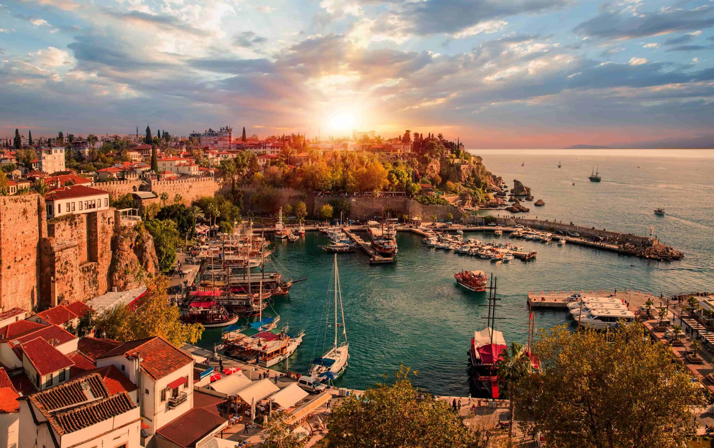
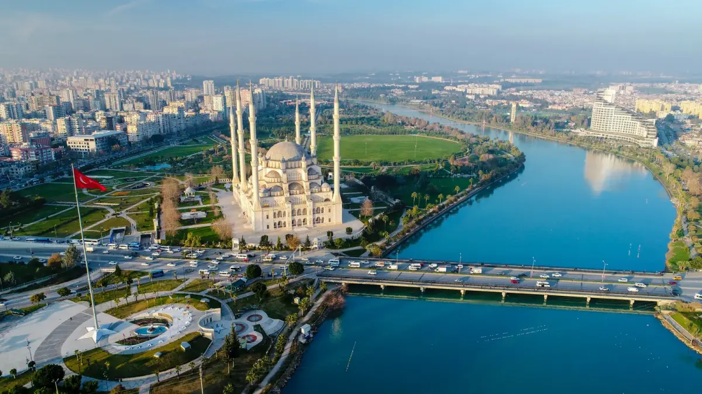
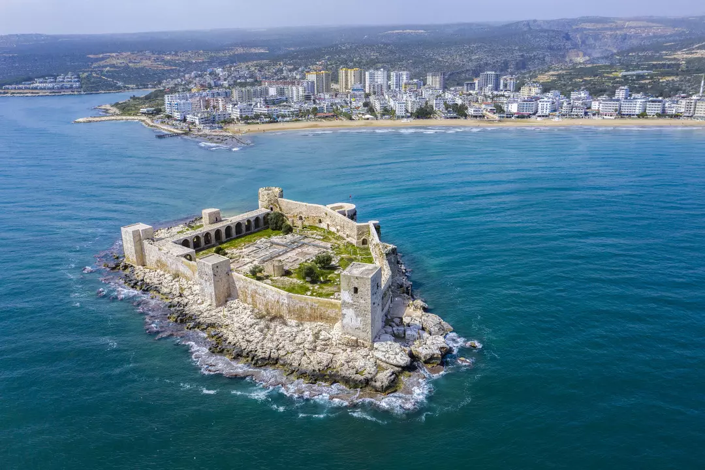
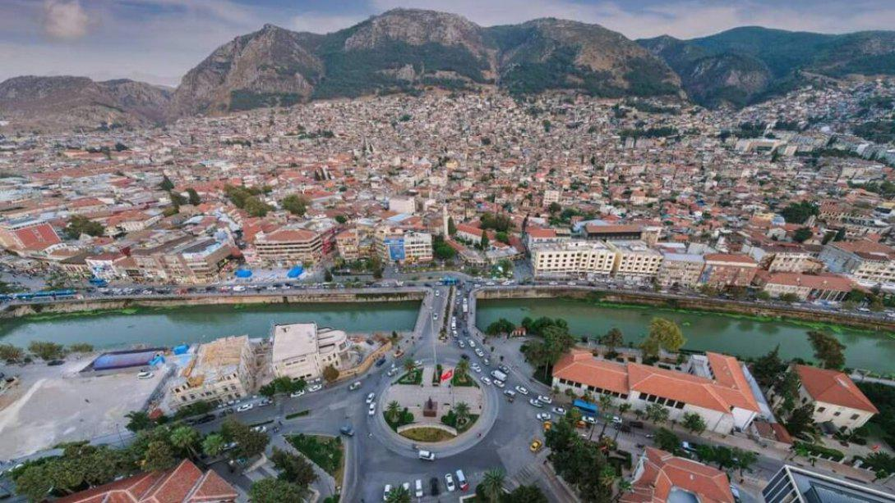
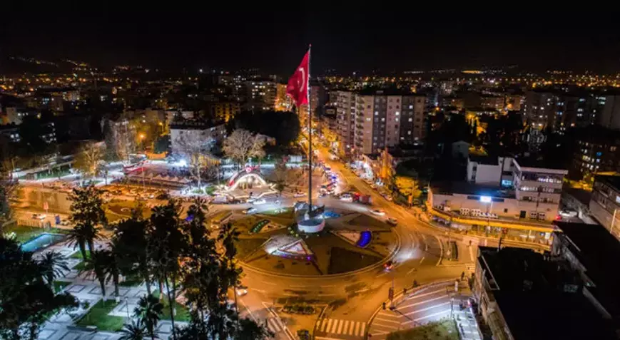
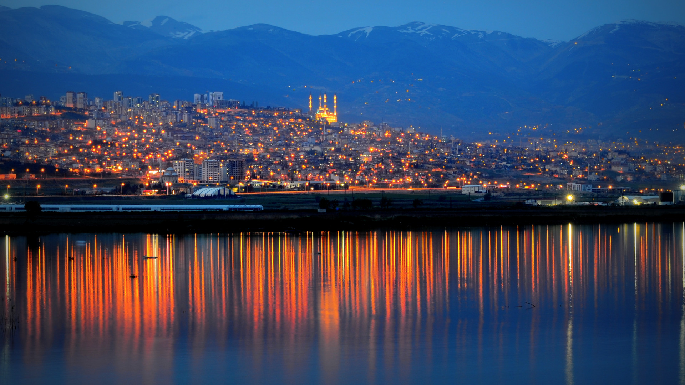
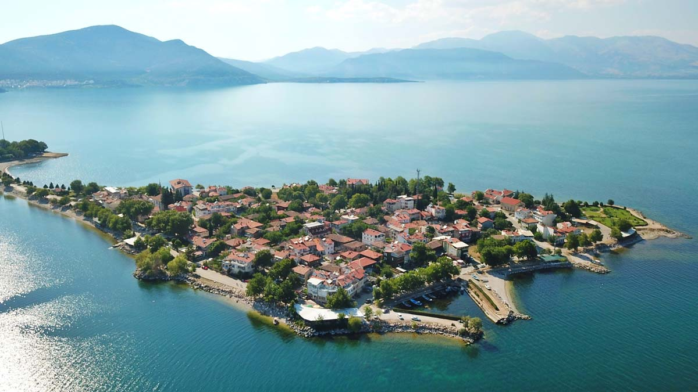
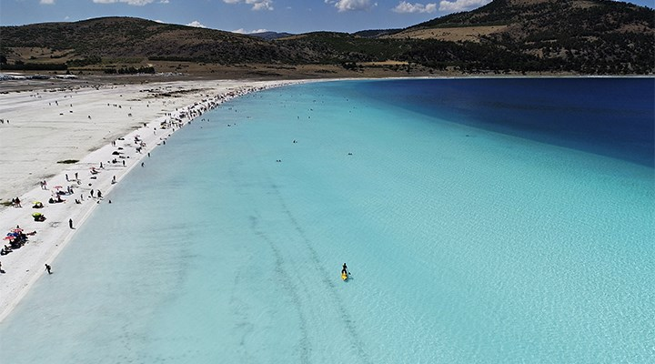

Turkuaz sahilleri, tarihi Kaleiçi ve antik kentleriyle Akdeniz'in incisi.

Kebap, şalgam ve Sabancı Merkez Camii ile gastronomi ve kültür şehri.

Kızkalesi ve tantunisiyle bilinen, deniz kenarında modern bir şehir.

Tarihi zenginlikleri, mozaik müzeleri ve çok kültürlü yapısıyla öne çıkar.

Doğa yürüyüşleri, kaplıcalar ve Karatepe-Aslantaş ile tanınır.

Dondurması ve edebi kimliğiyle tanınan köklü bir Akdeniz şehridir.

Gül bahçeleri, lavanta tarlaları ve Eğirdir Gölü ile doğa tutkunlarının durağı.

Salda Gölü’nün eşsiz manzarası ve tarihi Sagalassos Antik Kenti ile bilinir.